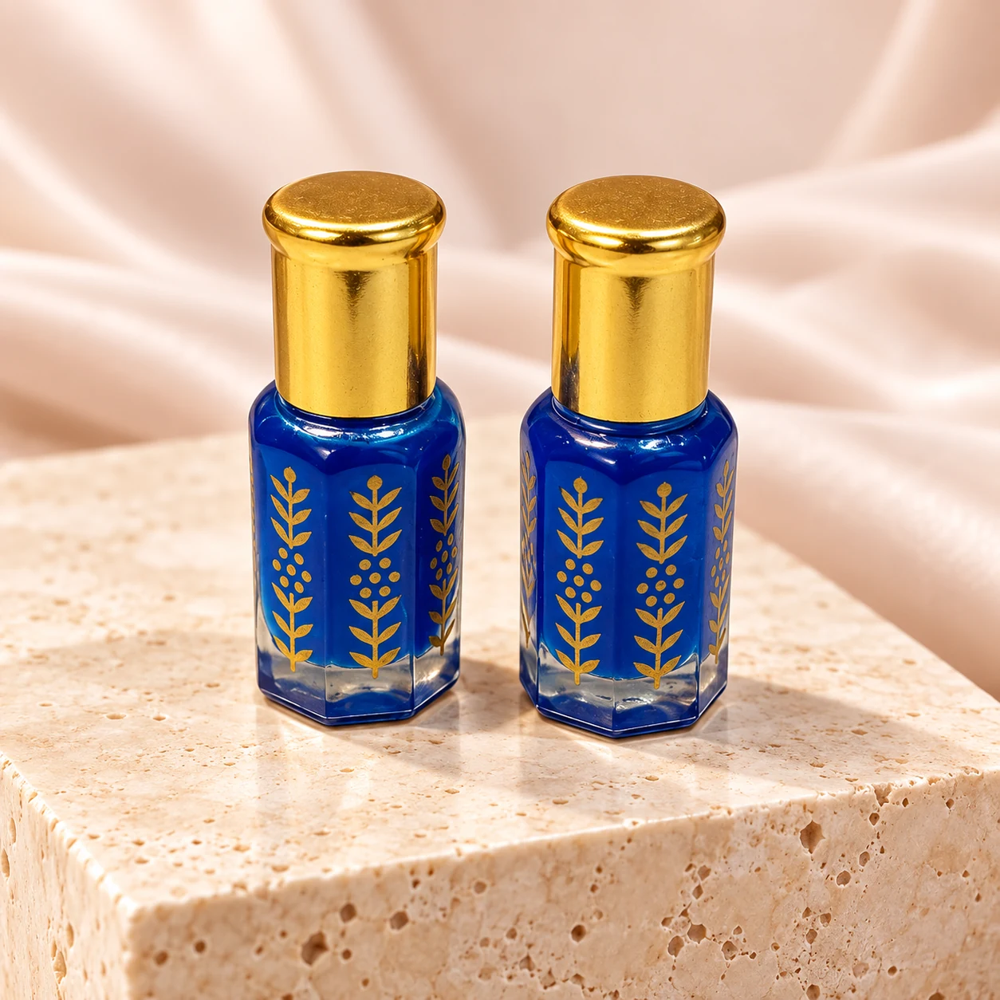

07المسك والعطور
تشكيلة المسك — الزجاجات الزرقاء
زجاجات زرقاء مزخرفة بالذهبي تضيف لمسة فخامة إلى مجموعة المسك.
تتميز هذه التشكيلة من آيلا مسك بزجاجات زرقاء عميقة اللون، مزينة بزخارف نباتية وأغطية ذهبية. تُظهر الصورة زجاجتين متناسقتين، بتصميم جميل للاقتناء أو الإهداء. تُحدد أسماء الروائح والأحجام وخيارات البيع بعد تأكيدها من المتجر؛ لا يدل لون الزجاجة وحده على نوع المسك أو تركيبته.
- الخيار
- التشكيلة الزرقاء
- السعر والمخزون
- بانتظار بيانات المتجر
بيانات تحتاج إلى تأكيد
- أسماء الروائح
- الأحجام
- البيع منفردًا أم كطقم
- نوع العطر وطريقة تطبيقه